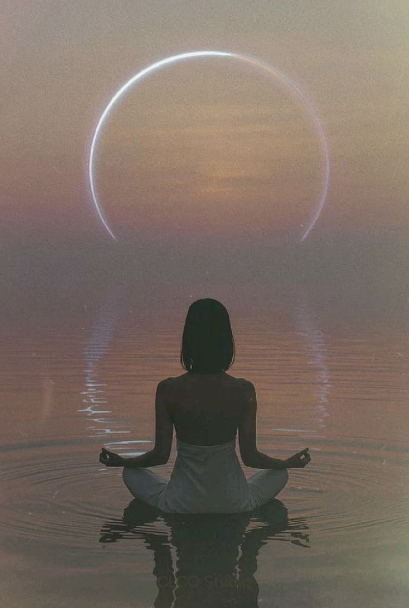

Inversión
$777
Registros akáshicos · $777
Los Registros Akáshicos son la memoria del alma: todo lo que has sido, todo lo que eres, todo lo que puedes llegar a ser. En esta sesión accedemos directamente a esa sabiduría y la traemos al presente.

La sesión dura una hora. En ese tiempo, trabajamos con tres preguntas que tú llevas. Accedemos juntas a los Registros y profundizamos en cada respuesta: el qué, el por qué y el cómo, desde la sabiduría de tu alma, no desde la interpretación.
Las preguntas pueden ser sobre cualquier área de tu vida. Lo único que te pido es que llegues con preguntas abiertas (no de sí o no) para que la respuesta pueda ser completa.
Inversión
$777
Lleva tus 3 preguntas listas. No necesitas preparación espiritual especial. Pero sí te recomiendo tomarte un momento antes de la sesión para reflexionar en qué quieres profundizar. Las mejores preguntas para los Registros son abiertas, específicas y vienen desde un lugar honesto de querer saber, no de buscar validación.
“¿Qué necesito entender sobre el patrón que repito en mis relaciones?”
“¿Cuál es el origen de mi relación con el dinero y cómo puedo transformarla?”
“¿Qué vine a aprender en esta etapa de mi vida?”
No. Lo único que necesitas es disposición a escuchar. El campo responde independientemente de tus creencias.
Sí. Llega con tus preguntas pensadas pero si en el momento algo cambia o surge algo más importante, lo ajustamos.
En las 48 horas posteriores a tu sesión.
Los Registros siempre responden, aunque a veces la respuesta es que esa información no está disponible en este momento, y eso en sí mismo es una respuesta valiosa. Siempre salimos con algo.
Ya tienes acceso a todo lo que necesitas saber. A veces solo necesitas el canal correcto para escucharlo.